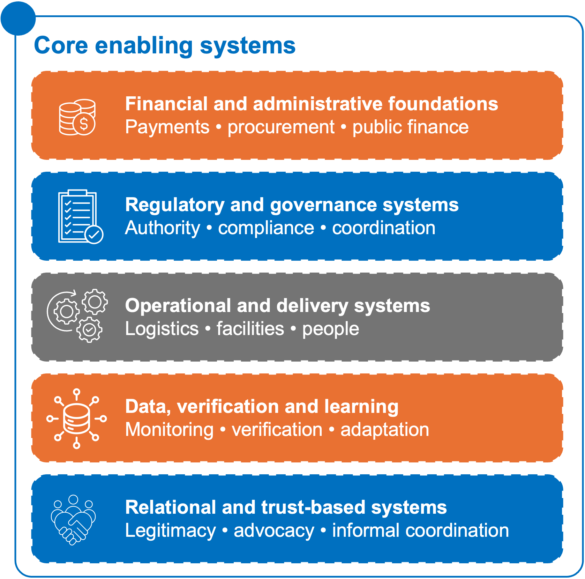

6.1 Core enabling systems

Figure 13: Five systems, one outcome: from finance and regulation to trust and data, enabling delivery that actually holds.Figure 13: Five systems, one outcome: from finance and regulation to trust and data, enabling delivery that actually holds.Collaboration models are ultimately shaped by the environments in which they operate. Beyond financing structures or institutional arrangements, implementation outcomes often depend on the strength of underlying operational, financial, regulatory, and coordination capacities. In practice, weak enabling systems frequently become hidden constraints that slow execution, reduce implementation credibility, and limit the ability of initiatives to scale sustainably. Assessing these systems is therefore critical to understanding both implementation readiness and long-term delivery capacity.
- Financial and administrative foundations
Reliable implementation depends heavily on the strength of underlying financial and administrative systems. This includes the reliability and enforceability of payment rails, the transparency and operational capacity of procurement processes, and the broader discipline of public financial management processes. In many contexts, delayed reimbursements, procurement bottlenecks, or inconsistent financial flows create operational uncertainty that weakens delivery credibility and discourages long-term private-sector participation.
- Regulatory and governance systems
Regulatory and governance systems shape the legitimacy, predictability, and coordination capacity of implementation ecosystems. Regulatory pathways and compliance processes, legislative processes and political legitimacy, and broader coordination and decision-making capability all influence how rapidly initiatives move from concept to execution. In fragmented institutional environments, fragmented coordination mechanisms or unclear institutional authority frequently slow implementation and create execution risks across actors. Long-term implementation is also influenced by institutional culture and accountability norms, which shape how responsibilities are enforced and how institutional decisions are maintained over time.
- Operational and delivery systems
Operational systems determine whether services, products, and interventions can realistically function at scale. This includes the strength of logistics and supply-chain systems, the availability of service delivery facilities and networks, and the reliability of core infrastructure such as power and digital connectivity. Sustainable implementation also depends on the availability of skilled personnel, institutional continuity, and accumulated operational knowledge through human capital and institutional memory. Even well-funded initiatives often struggle when core delivery capacities remain unreliable or institutionally fragile.
- Data, verification, and learning systems
Effective implementation also relies on reliable data infrastructure and performance verification systems. These systems support monitoring, accountability, operational visibility, and evidence-based decision-making. Weak verification capacity frequently undermines coordination, reduces trust between actors, and complicates results-based or performance-linked financing arrangements.
- Relational and trust-based systems
Beyond formal structures, collaboration ecosystems are also sustained by informal and relational dynamics. Advocacy and legitimizing narratives often help build political support, sustain stakeholder alignment, and strengthen public legitimacy around implementation efforts. At the same time, informal coordination and trust-based cooperation frequently play a critical role in resolving operational friction, facilitating collaboration across institutions, and maintaining momentum across complex delivery ecosystems.
6.2 From System Readiness to Systems Transformation
The systems described above are not only conditions required for implementation. They can also be strengthened through the partnership model itself. A partnership should therefore be assessed not only by whether it can operate within existing systems, but also by whether it improves those systems over time.
This systems transformation lens asks whether a partnership helps build the institutional, financial, operational, and accountability foundations required for future opportunities to become more deployable. A model that reaches financial close but leaves coordination weak, institutions dependent on external support, local actors excluded, or transaction costs unchanged may deliver a project without strengthening the wider ecosystem.
Users should therefore ask whether the partnership:
- strengthens the institutions responsible for preparation, procurement, payment, regulation, delivery, or accountability;
- improves coordination across public, private, civil-society, financing, and delivery actors;
- reduces transaction costs through standard documents, repeatable processes, shared platforms, or better data;
- builds implementation capability among local institutions, providers, SMEs, or intermediaries;
- improves the ability of the system to absorb and use capital effectively;
- strengthens domestic capital participation where feasible;
- supports local ownership of assets, platforms, institutions, or delivery networks over time;
- enables capital recycling through repayment, refinancing, portfolio performance, or take-out pathways;
- reduces long-term dependence on external grants by creating more credible payment, delivery, and ownership structures.
This does not mean every partnership must become commercially self-sustaining. Some activities will continue to require grant funding or public financing. The question is whether the model strengthens the system around it, so that future partnerships are easier to structure, finance, implement, monitor, and adapt.
Part XIV returns to these questions through monitoring and learning metrics, including indicators on institutional capability, coordination quality, domestic capital participation, transaction-cost reduction, local ownership, and capital crowd-in.
6.3 Community and accountability systems
Sustainable implementation depends not only on institutional effectiveness, but also on community legitimacy, trust, and accountability. Even technically sound initiatives can face resistance, limited adoption, or implementation risks when community engagement systems remain weak or when affected populations lack trusted channels for participation, feedback, or protection.
- Community engagement and participation systems
Successful implementation often depends on the existence of effective community feedback loops, strong community adoption and participation systems, and broader forms of local trust infrastructure that support engagement between institutions and affected populations. These mechanisms help strengthen implementation legitimacy, improve responsiveness to local realities, and encourage sustained participation over time. In many contexts, trusted community relationships also play an important role in facilitating behavioral adoption, reducing resistance, and supporting long-term implementation continuity.
- Accountability, protection, and monitoring systems
Implementation sustainability also relies on the presence of credible accountability and protection mechanisms. Effective grievance channels allow affected communities and stakeholders to raise concerns, resolve disputes, and strengthen institutional responsiveness during implementation. At the same time, safeguards, data protection measures, and broader social performance monitoring systems help ensure that implementation processes remain ethical, inclusive, and socially accountable over time. Weak accountability systems can undermine public trust, reduce adoption, and create operational or reputational risks that become increasingly difficult to address over time.
6.4 System readiness test
Before selecting or scaling a collaboration model, it is important to assess whether the systems required for implementation are already functional, partially established through previous development activity, or still require significant strengthening. In many contexts, implementation constraints do not emerge from the model itself, but from weaknesses in the surrounding operational, accountability, payment, verification, and community structures.
System readiness should influence both model selection and implementation sequencing. In some contexts, the priority may not be immediate scale, but rather the strengthening of the foundational systems required to support sustainable execution and long-term implementation credibility.
The following diagnostic lens can help assess implementation readiness across key enabling areas.
Model selection begins with the binding constraint. The three models in this Playbook are not generic partnership types; they are responses to specific execution problems that prevent existing social-impact or development activities from becoming scalable, sustainable, and deployable.
Before choosing a model, users should ask: what is preventing this opportunity from moving from activity to execution? In some cases, the problem is fragmentation: many small actors, assets, contracts, or cash flows exist, but none are large or standardized enough to attract capital individually. In other cases, the opportunity is visible but underprepared: the need is clear, but the project lacks credible structuring, risk allocation, payment security, or implementation readiness. In other contexts, service providers already exist, but they are not connected to predictable demand, standards, verification, and payment systems.
This section helps users move from diagnosis to model choice. It should be used after assessing the core failure patterns, actor roles, political economy conditions, and system readiness described in the previous sections.